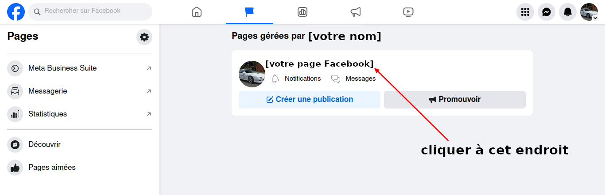
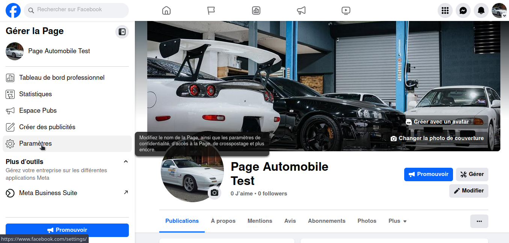
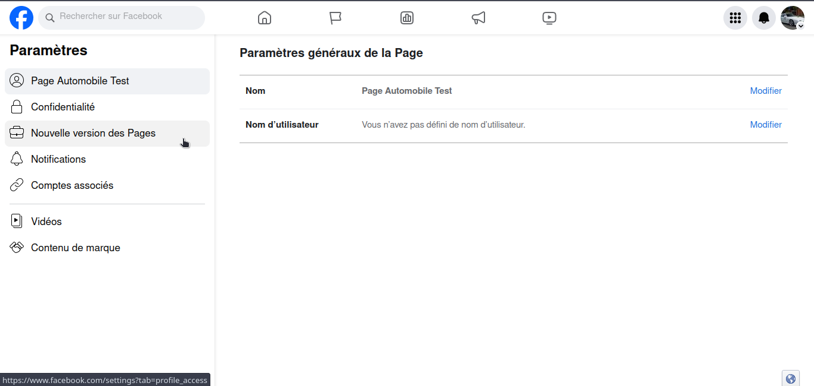
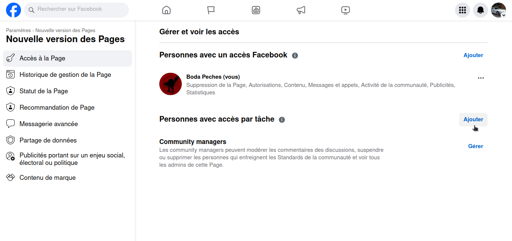
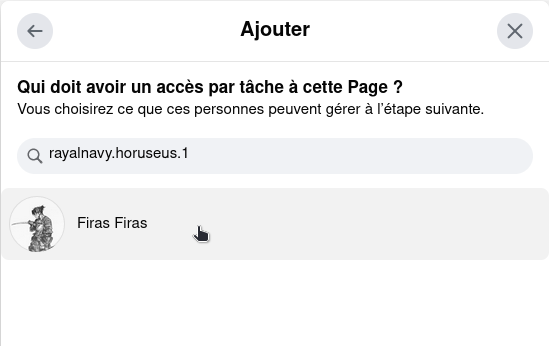
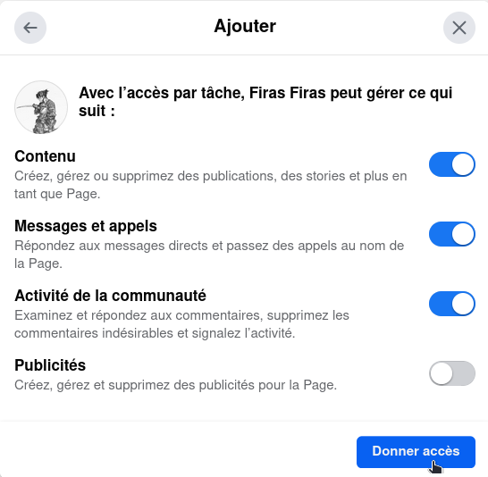
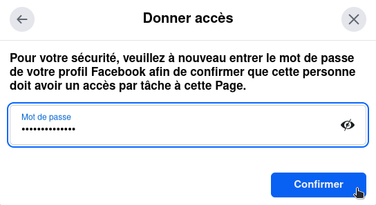

Afin de pouvoir poster automatiquement. Imaki a besoin de l'accès à votre page FaceBook.
Prérequis : Il faut que vous soyez connecté.e au compte Facebook de la page de votre concession.
Voyons ensemble comment autoriser l'accès.
Voici le lien permettant de visualiser les pages de votre compte Facebook
Lien de vos pagesExemple
Afin d'accéder aux paramètres de la page, il faut cliquer sur la roue dentée intitulée "Paramètres"
Exemple
Ensuite, il faut cliquer sur la "Nouvelle version des Pages"
Exemple
Dans la section "Accès à la Page" (sélectionnée par défaut), il s'agit d'ajouter une personne avec accès par tâche.
Exemple
Ensuite, il faut entrer le nom d'utilisateur suivant et le sélectionner : rayalnavy.horuseus.1
Exemple
Après sélection, ajoutez les 3 premières autorisation (contenu, message et appels et activité de la communauté).
Puis cliquez sur Donner l'accès.
Enfin, entrez votre mot de passe, puis cliquez sur Confirmer.
Copiez le lien de votre page
Exemple